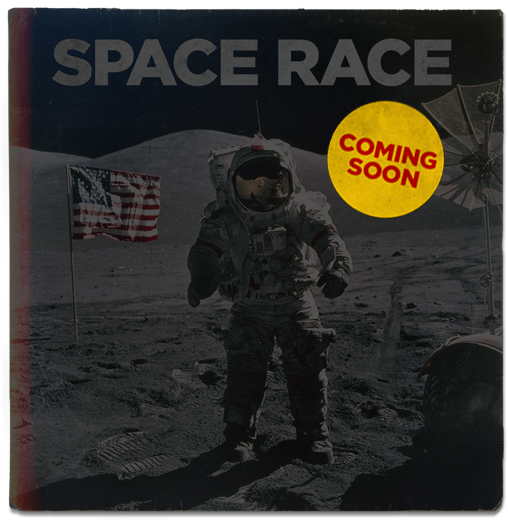

<!DOCTYPE html>
<html>
<head>

	<script src="https://npmcdn.com/react@latest/dist/react-with-addons.js"></script>
	 <script src="https://npmcdn.com/react-dom@latest/dist/react-dom.js"></script>
	 <script src="https://cdnjs.cloudflare.com/ajax/libs/babel-core/5.8.24/browser.js"></script>
	<script src="https://npmcdn.com/react-router@3.0.2/umd/ReactRouter.min.js"></script>

    <meta charset="utf-8" />
    <title>CNN Soundtracks</title>
    <meta name="description" content="" />
    <meta name="viewport" content="width=device-width, initial-scale=1.0, maximum-scale=1.0" />
    <!--Favicon -->
	<link rel="icon" type="image/png" href="images/CNN_Favicon.png" />
		
	<!-- CSS Files -->

	<link rel="stylesheet" href="css/reset.css" />
	<link rel="stylesheet" href="css/animate.min.css" />
	<link rel="stylesheet" href="css/bootstrap.min.css" />
	<link rel="stylesheet" href="css/font-awesome.min.css" />
	<link rel="stylesheet" href="css/socials.css" />
	<link rel="stylesheet" href="css/magnific-popup.css" />
	<link rel="stylesheet" href="css/flexslider.css" />
	<link rel="stylesheet" href="css/cubeportfolio.min.css" />
	<link rel="stylesheet" href="css/owl.carousel.css" />
	<link rel="stylesheet" href="css/settings-ie8.css" />
	<link rel="stylesheet" href="css/settings.css" />

	<!-- Page Styles -->
	<link rel="stylesheet" href="css/style.css" />
	<link rel="stylesheet" href="css/backgrounds.css" />
	<link rel="stylesheet" href="css/responsive.css" />
	<link rel="stylesheet" href="css/main.css" />
	<link rel="stylesheet" type="text/css" href="css/jquery.jscrollpane.css">

	<!-- <link rel="stylesheet" type="text/css" href="css/timeline.css"> -->
	<link rel="stylesheet" type="text/css" href="css/lightcase.css">
	<!-- End Page Styles -->

	<!-- Page Layout Color, night or dark -->
	<link id="changeable_tone" rel="stylesheet" href="css/page_tones/dark.css" />
	<!-- End Page Layout Color -->

	<!-- Page Elements Color -->
	<link id="changeable_color" rel="stylesheet" href="css/colors/red.css" />
	<!-- End Page Elements Color -->

	<!-- Page Fonts / Pacifico-->
	<link href='http://fonts.googleapis.com/css?family=Pacifico' rel='stylesheet' type='text/css'>
	<!-- Raleway-->
	<link href='http://fonts.googleapis.com/css?family=Raleway:400,100,,200,300,600,700' rel='stylesheet' type='text/css'>
	<!-- Oswald-->
	<link href='http://fonts.googleapis.com/css?family=Oswald:400,700,300' rel='stylesheet' type='text/css'>

	<!-- End CSS Files -->
	<style>


		.episode-mg {
			margin-top: 50px;
			margin-bottom: 362px;
		}

		.timeline-ftr {
			/*background-image:url(images/CNN_ST_EpisodeTOC_JD_R04_01_footer.png);*/
			width: 100%;
			height: 363px;
			background-position: center bottom;
		}

		#logo_badge {
			margin-left: 45px;
			z-index: 100000000;
		}

		.row {
			margin: 0;
		}

		@media (max-width: 768px) {

			.navbar-right {
				display: none;
			}

			.navbar-center {
				margin-left: 14px;
			}
		}

		.background_home {
			/*background-color: #000000;*/
			/*min-height: 1000px;*/
		}

		#introVideo { 

		    position: fixed;
		    top: 50%;
		    left: 50%;
		    transform: translateX(-50%) translateY(-50%);

		    /*min-width: 100%;
		    min-height: 100%;
		    width: auto;
		    height: auto;*/
		    z-index: -100;
    	}

    	#apple-badge {
    		position: fixed;
    		bottom: 40px;
    		left: 40px;
    		width: 110px;
    		height: 40px;
    	}

    	#apple-player {

    		-webkit-transition: bottom 1s;
		    -moz-transition: bottom 1s;
		    -o-transition: bottom 1s;
		    transition: bottom 1s;

    		position: fixed;
    		left: 20px;
    	}

    	#apple-close {
    		width: 20px;
    		height: 20px;
    		position: absolute;
    		top: 3px;
    		left: 4px;
    	}

    	.move-down {
    		bottom: -506px;
    	}

    	.move-up {
    		bottom: -6px;
    	}

    	.feature-boxes {
			padding-left: 24px;
			padding-right: 24px;
		}

		.feature-boxes .feature-box {
			padding-right: 10px;
			padding-left: 10px;
		}

		.about-title {
			font-size: 14px;
			font-weight: bold;
			text-transform: uppercase;
		}

		#episode-1-video {
			margin-top: 50px;
			background-color: #000;
		}

		.lightcase-icon-close {
			position: fixed;
			top: 20px;
			right: 20px;
			font-size: 50px;
		}

		#lightcase-overlay {
			z-index: 10000 !important;
		}

		#lightcase-loading {
			z-index: 10001 !important;
		}

		#lightcase-case {
			z-index: 10002 !important;
		}

		.lightcase-icon-close {
			z-index: 10003 !important;
		}

		#lightcase-nav {
			z-index: 10004 !important;
		}

		#lightcase-nav a[class*='lightcase-icon-'] {
			z-index: 10004 !important;
		}

		#fullscreen {
			min-height: 100vh;
		}

		.album-collapse {
			/*-webkit-transition: all 1s;
		    -moz-transition: all 1s;
		    -o-transition: all 1s;
		    transition: all 1s;
			transform: all .2s ease-in-out;*/

			-webkit-transition: -webkit-transform 0.4s;
    		transition: transform 0.4s;
		}

		.album-collapse:hover { 

			-webkit-transform: scale(1.1);
		    -moz-transform: scale(1.1);
		    -o-transform: scale(1.1);
		    transform: scale(1.1); 
		}

		#CTA {
			cursor: pointer;
		}

		.fa-2x {
			font-size: 1.5em;
		}

		#temp {
			height: 800px;
		}

		.ep1 {
			display: block;
			position: absolute;
			height: 100%;
			/* background: url(/images/CNN_EpisodeTOC_Sidebar.png) no-repeat left top; */
		}

		.ep1 img {
			max-width: 100%;
			max-height: 100%;
		}

		#episode-wrapper {
			min-height: 100%;
		}

		#episode-wrapper:after{
			content: "";
			display: block;
		}

		#lightcase-content {
			background-color: #000 !important;
		}

		.episode_video {
			float: none;
			margin: 0 auto;
		}

		.tape-title {
			margin: 0 auto;
			margin-top: 10px;
		}

		.view {
			width: 287px;
		}

		.interviews {
			width: 227px;
		}

		.next_on {
			width: 448px;
		}

		.soundtracks {
			background-image:url(/images/CNN_ST_PreLoaderGIF_JD_R01_03.gif);
			width: 1256px;
			height: 256px;
		}

		#readMore p {
			color: #FFFFFF;
		}


	</style>
 
</head>

<!-- Body Start -->
<body>

	<!-- Page Loader -->
	<article id="pageloader" class="dark-loader">
		<!-- <div class="soundtracks"></div> -->
		<div class="spinner">
			<div class="bounce1"></div>
			<div class="bounce2"></div>
			<div class="bounce3"></div>
		</div>
	</article>

	<div id="main">

	</div>


	<div id="apple-badge" onclick="showPlayer()">
		
	</div>	

	<div id="apple-player" class="move-down">
		<div id="apple-close" onclick="closePlayer()"></div>
		<iframe src="//tools.applemusic.com/embed/v1/playlist/pl.86762ced2e524800a6531f0d8fef9c3f?country=us" height="500px" width="100%" frameborder="0"></iframe>
	</div>

	<!-- JS Files -->
	<script type="text/javascript" src="js/jquery-2.1.3.min.js"></script>
	<script type="text/javascript" src="js/bootstrap.min.js"></script>
	<script type="text/javascript" src="js/jquery.appear.js"></script>
	<script type="text/javascript" src="js/waypoint.js"></script>
	<script type="text/javascript" src="js/modernizr-latest.js"></script>
	<script type="text/javascript" src="js/jquery.easing.1.3.js"></script>
	<script type="text/javascript" src="js/SmoothScroll.js"></script>
	<script type="text/javascript" src="js/jquery.magnific-popup.min.js"></script>
	<script type="text/javascript" src="js/jquery.superslides.js"></script>
	<script type="text/javascript" src="js/jquery.flexslider.js"></script>
	<script type="text/javascript" src="js/jquery.simple-text-rotator.js"></script>
	<script type="text/javascript" src="js/jquery.cubeportfolio.js"></script>
	<script type="text/javascript" src="js/owl.carousel.min.js"></script>
	<script type="text/javascript" src="js/jquery.parallax-1.1.3.js"></script>
	<script type="text/javascript" src="js/skrollr.min.js"></script>
	<script type="text/javascript" src="js/jquery.fitvids.js"></script>
	<script type="text/javascript" src="js/jquery.mb.YTPlayer.js"></script>
	<!-- Revolution Slider -->
	<script type="text/javascript" src="js/rev_slider/jquery.themepunch.revolution.min.js"></script>
	<script type="text/javascript" src="js/rev_slider/jquery.themepunch.tools.min.js"></script>
	<script type="text/javascript" src="js/rev_slider/rev_plugins.js"></script>
	<!-- Contact Form -->
	<script type="text/javascript" src="js/jquery.validate.min.js"></script>
	<script type="text/javascript" src="js/contact-form.js"></script>
	<!-- Twitter -->
	<script type="text/javascript" src="js/tweecool.min.js"></script>
	<script type="text/javascript" src="js/tweecool.js"></script>
	<!-- Page Plugins -->
	<script type="text/javascript" src="js/plugins.js"></script>
	<!-- Portfolio Plugins -->
	<script type="text/javascript" src="js/portfolio.js"></script>
	<!-- Theme Panel -->
	<!-- <script type="text/javascript" src="theme_panel/themepanel.js"></script> -->

	<script type="text/javascript" src="js/lightcase.js"></script>

	<!-- JS Scrollpane -->
	<script type="text/javascript" src="js/jscrollpane/jquery.mousewheel.js"></script>
	<script type="text/javascript" src="js/jscrollpane/jquery.jscrollpane.js"></script>
	<script type="text/javascript" src="js/jscrollpane/mwheelIntent.js"></script>

	<script type="text/babel">

		var { Router,
	      Route,
	      IndexRoute,
	      IndexLink,
	      hashHistory,
	      Link } = ReactRouter;

	    var destination = document.querySelector("#main");

	    var About = React.createClass({
	      render: function() {
	      	document.documentElement.style.backgroundImage = 'url("images/about_bg.jpg")';
	        return (
	          <div>
				
				<section id="home" className="home bw-type container">
					<div className="border" style={{marginTop: "100px"}}>
			                <div className="border col-md-7 about-lt"></div>
			                <div className="border col-md-5 about-rt">
			                <div className="t-center" style={{marginTop: "0px", marginBottom: "10px"}}><h2>ABOUT THE SHOW</h2></div>
			                  <p>Soundtracks is an eight-part series executive-produced by Dwayne Johnson, Dany Garcia, Hiram Garcia,
							 and Brian Gewirtz that will explore the music tied to iconic moments in history. The show premieres Thursday, April 20th, 10pm et/pt.  Every episode will cover a tragedy, triumph, or the start of a movement – and the music that came to define it. From the March on Washington to the
							riots at Stonewall, the moon landing to Hurricane Katrina – music has played an integral
							part in celebrating, criticizing, and amplifying these seismic events in our collective
							history. Soundtracks is produced by Show of Force and Seven Bucks Productions.</p>

			                  <div><h3 className="uppercase">The Assassination of Martin Luther King, JR.</h3> <p>The episode explores the music that kept the spirit of the civil rights
			 movement alive following Martin Luther King, Jr.’s death. </p></div>
			                  <div><h3 className="uppercase">September 11th.</h3><p> Following the terrorist attacks on September 11th, songs like Billy Joel’s “New York State of Mind” took on a new and heightened meaning and politically charged country music took center stage. </p></div>
			                  <div><h3 className="uppercase">Kent State &amp; The Vietnam War </h3><p>Following the killings of four Kent State University students during anti-Vietnam War protests, politically
			 driven songs from Neil Young, Buffalo Springfield and others became popular. </p></div>
			                  <div><h3 className="uppercase">Hurricane Katrina</h3><p>Following Hurricane Katrina, international artists from U2 to Kanye West joined New Orleans musicians in benefit
			 concerts to help ensure the city’s rich traditions survived.</p></div>
			                  <div><h3 className="uppercase">The Fall of the Berlin Wall</h3><p>Neil Armstrong and Buzz Aldrin’s moonwalk inspired musicians from David Bowie and the Byrds to Parliament-Funkadelic
			 and Sun Ra to imagine a cosmic future for mankind. </p></div>
			                  <div><h3 className="uppercase">The Moon Landing</h3><p>The episode charts the course of the Cold War in Berlin through music revealing how it helped to sow the seeds
			 of rebellion. </p></div>
			                  <div><h3 className="uppercase">The Stonewall Riots</h3><p>The episode tracks the beginning of the gay rights movement in America following the riots at Stonewall Inn
			 and how music has played a vital role in celebrating and preaching tolerance of the LGBT community.</p></div>
			                  <div><h3 className="uppercase">Battle of the Sexes</h3><p>Billie Jean King’s win against Bobby Riggs in their famous tennis match was a galvanizing moment for the women’s
			 movement and ushered in music that delivered messages of female empowerment.</p></div>
			              </div>

			  		</div>

				</section>
	          </div>
	        )
	      }
	    });


	    var Home = React.createClass({
	      contextTypes: {
			router: React.PropTypes.object.isRequired,
		  },

	      componentDidMount: function() {
            this.initHome();
          },
          componentDidUpdate: function() {
            this.initHome();
          },
	      render: function() {
	          return (
	            <div>
					<section id="home" className="home bw-type container">

						<div id="fullscreen" className="background_home parallax">
							<video id="introVideo" preload="auto" height="100%" width="100%"
				              poster="images/CNN_ST_RECORD_PLAYER.jpg">
				                <source src="video/CNN_ST_RECORD_PLAYER_Render.mp4" type='video/mp4' />
				                <source src="video/CNN_ST_RECORD_PLAYER_Render.WebM" type='video/webm' />
				             </video>
						</div>

						<div id="home-episodes" className="home-extra-note fullwidth t-center white thin absolute" data-0="opacity:1;" data-600="opacity:0;">
							<a id="CTA">ALL SHOWS</a>
						</div>

					</section>
	            </div>
	          );
	        },
	        initHome: function() {

	        	$( window ).bind("resize", function(){
					divResize();
				});

	        	var me = this;
	        	window.divResize();
	        	document.getElementById('CTA').addEventListener("click", introVidPlay, false);

	        	function endIntroVideo(){
	        		console.log(me.context.router);
	        		me.context.router.push('/episodes')

				}

		        function introVidPlay() {
					document.getElementById('introVideo').play();
					document.getElementById('introVideo').addEventListener('ended',endIntroVideo,false);
				}

		        }
		    });

	    var Episodes = React.createClass({

	      render: function() {
	      	  document.documentElement.style.backgroundImage = 'url("images/CNN_ST_AllEpisodes_JD_R02_01.jpg")';
	          return (
	            <div>
					<section id="episodes" className="container background_episodes">
						<div className="t-center">
							<div className="feature-boxes type-3 clearfix">
								<div className="feature-box col-xs-3" data-animation="fadeIn" data-animation-delay="100">
									<div className="feature-text small-head f-left t-left dark">
										<Link to="/episode-1"></Link>
									</div>
									<h4 className="no-margin no-padding uppercase bold white">
										<span className="red">EXPLORE EPISODE: 1</span>
									</h4>
								</div>

								<div className="feature-box col-xs-3" data-animation="fadeIn" data-animation-delay="150">
									<div className="feature-text small-head f-left t-left dark">
										
									</div>
									<h4 className="no-margin no-padding uppercase bold white">
										EPISODE: 2
									</h4>
								</div>

								<div className="feature-box col-xs-3" data-animation="fadeIn" data-animation-delay="200">
									<div className="feature-text small-head f-left t-left dark">
										
									</div>
									<h4 className="no-margin no-padding uppercase bold white">
										EPISODE: 3
									</h4>
								</div>

								<div className="feature-box col-xs-3" data-animation="fadeIn" data-animation-delay="250">
									<div className="feature-text small-head f-left t-left dark">
										
									</div>
									<h4 className="no-margin no-padding uppercase bold white">
										EPISODE: 4
									</h4>
								</div>
							</div>

							<div className="feature-boxes type-3 clearfix">
								<div className="feature-box col-xs-3" data-animation="fadeIn" data-animation-delay="100">
									<div className="feature-text small-head f-left t-left dark">
										
									</div>
									<h4 className="no-margin no-padding uppercase bold white">
										EPISODE: 5
									</h4>
								</div>

								<div className="feature-box col-xs-3" data-animation="fadeIn" data-animation-delay="150">
									<div className="feature-text small-head f-left t-left dark">
										
									</div>
									<h4 className="no-margin no-padding uppercase bold white">
										EPISODE: 6
									</h4>
								</div>

								<div className="feature-box col-xs-3" data-animation="fadeIn" data-animation-delay="200">
									<div className="feature-text small-head f-left t-left dark">
										
									</div>
									<h4 className="no-margin no-padding uppercase bold white">
										EPISODE: 7
									</h4>
								</div>

								<div className="feature-box col-xs-3" data-animation="fadeIn" data-animation-delay="250">
									<div className="feature-text small-head f-left t-left dark">			
										
									</div>
									<h4 className="no-margin no-padding uppercase bold white">
										EPISODE: 8
									</h4>
								</div>
							</div>
						</div>
					</section>


				</div>
	          );
	        }
	    });

	    var Episode1 = React.createClass({
	      componentDidMount() {

	      		function resizeFooter() {
	      			var footerHeight = $(".big-footer").height();
					//$("#main").css("padding-bottom", footerHeight);
					$(".big-footer").css("margin-top", -footerHeight)
					$("#episode_1").css("padding-bottom", footerHeight)
					console.log(footerHeight);
	      		}

	      		$(".footer_img").load(function() {
	      			// initial call
	      			resizeFooter();
	      		}); 
	      		

	      		$( window ).bind("resize", function(){
				     resizeFooter();
				});


				this.$node = $(this.refs.lightcase);
				this.$node.lightcase({
			
			});
		  },
	      render: function() {
	        return (
	          <div>
	          	<div id="episode-wrapper">
					<section id="episode-1-video" className="home bw-type container">
						<div className="parallax">
							<video id="transitionVideo" autoPlay preload="auto" height="100%" width="100%"
				              poster="images/CNN_ST_PhotoTransition.jpg">
				                <source src="video/CNN_ST_PhotoTransition_RENDER.mp4" type='video/mp4' />
				                <source src="video/CNN_ST_PhotoTransition_RENDER.WebM" type='video/webm' />
				             </video>
						</div>
					</section>


					<section id='episode_1' className="type-1 background_ep1">
						<div className="row">
							
						</div>
						
						<div className="inner">
							<div className="row">
								
								<div className="col-md-6">
									<div className="t-center">
										<h2>ABOUT THE EPISODE</h2>
									</div>
									<p>The death of Martin Luther King, Jr. marked a turning point in the Civil Rights Movement, a moment of reckoning for African Americans in the United States. After the mourning, the community gathered its strength to continue King’s fight, inspired by the fiery protest songs of Nina Simone, the black power anthem of James Brown, and the extraordinary voice of Aretha Franklin.</p>

									<p>The continued struggle for civil rights has been a long and uneven battle since 1968, but the spirit of resistance has been kept alive in the music, from Stevie Wonder’s campaign to establish a Martin Luther King national holiday to Kendrick Lamar’s searing protest song that became an anthem for the Black Lives Matter Movement. The music in this episode both celebrates the strength and solidarity of the African American experience while reminding us how far we still have to go.</p>
								</div>
								<div className="col-md-6" ref={(el) => {
										$(el).find("a").lightcase();
									}}>
									<div>
									<a ref="lightcase" href="images/mlk_photo_gallery_2880x1800/AS_01707_MAG_Students_2880x1800.jpg" data-rel="lightcase:myCollection"></a>
									<a ref="lightcase" href="images/mlk_photo_gallery_2880x1800/AS_05398_LOC_Man_Lynched.jpg" data-rel="lightcase:myCollection"></a>
									<a ref="lightcase" href="images/mlk_photo_gallery_2880x1800/AS_06101_MAG_Black_Power_Women_M_2800x1800.jpg" data-rel="lightcase:myCollection"></a>
									<a ref="lightcase" href="images/mlk_photo_gallery_2880x1800/AS_06111_GET_Black_Panther_Fist_Pump_M_2880x1800.jpg" data-rel="lightcase:myCollection"></a>
									<a ref="lightcase" href="images/mlk_photo_gallery_2880x1800/AS_08185_GET_Black_Lives_Matter_LA_I_Cant_Breathe_Protest_M_retouch_2880x1800.jpg" data-rel="lightcase:myCollection"></a>
									<a ref="lightcase" href="images/mlk_photo_gallery_2880x1800/AS_08190_GET_BLM_March_Janelle_Monae_NYC_2015_2880x1800.jpg" data-rel="lightcase:myCollection"></a>
									<a ref="lightcase" href="images/mlk_photo_gallery_2880x1800/AS_08192_GET_BLM_Fist_Up_Barack_Obama_MLK_Poster_2015_2880x1800.jpg" data-rel="lightcase:myCollection"></a>
									<a ref="lightcase" href="images/mlk_photo_gallery_2880x1800/AS_08193_GET_BLM_Signs_Fists_Up_Stop_Killing_2015_2880x1800.jpg" data-rel="lightcase:myCollection"></a>
									<a ref="lightcase" href="images/mlk_photo_gallery_2880x1800/AS_08504_GET_BLM_Girls_March_Hands_Up_Dont_Shoot_2015_2880x1800.jpg" data-rel="lightcase:myCollection"></a>
									</div>
									<div className="tape-title view">
										
									</div>
							</div>

						</div>
					</div>

					<div className="row">
						<div className="col-lg-10 episode_video" ref={(el) => {
										$(el).find("a").lightcase();
									}}>
							 <div><a ref="lightcase" href="//www.youtube.com/embed/tS7szcrCzfc?rel=0&controls=1&showinfo=0&autoplay=1" data-rel="lightcase:videoCollection"></a>
							 <a ref="lightcase" href="//www.youtube.com/embed/eatisljr2P4?rel=0&controls=1&showinfo=0&autoplay=1" data-rel="lightcase:videoCollection"></a></div>
							 <div className="tape-title interviews">
									
							 </div>
						</div>
					</div>

					<div className="row" style={{marginTop: "100px"}}>
						<div className="col-lg-10 episode_video" ref={(el) => {
										$(el).find("a").lightcase();
									}}>
							 <div><a ref="lightcase" href="//www.youtube.com/embed/Mhj8MdRGm6k?rel=0&controls=1&showinfo=0&autoplay=1" data-rel="lightcase:video2Collection"></a></div>
							 <div className="tape-title next_on">
									
							 </div>
						</div>
					</div>

					<div className="row" style={{marginTop: "100px"}}>
								
						<div className="col-md-6" style={{marginTop: "-80px"}}>
							<div className="col-md-10" style={{margin: "0 auto", float: "none"}}>
							<div className="t-center">
								<h2>SONG HISTORIES</h2>
							</div>
							<h3>“We Shall Overcome” – various (Pete Seeger, Joan Baez, Mahalia Jackson, Peter Yarrow to name a few of the best known)</h3>

							<p>Though frequently credited to Pete Seeger, who published a version of the song in 1947 in his folk music magazine People’s Songs, “We Shall Overcome” had previously entered the national consciousness as a labor anthem. Sung on picket lines throughout the south, it was associated most notably with a mid-forties strike by North Carolina cigarette workers and at least one earlier strike involving miners in Alabama. Yet even those roots and the tune’s melody trace to an earlier and lyrically similar gospel song, “I’ll Be Alright,” and it’s that church spirit and its’ soulful yearning – transformed into the collective “we” by the labor movement – that made “We Shall Overcome” the natural choice of protesters, beginning with the Student Nonviolent Coordinating Committee in 1960. Says civil rights activists and U.S. Congressman John Lewis, who was badly beaten during the march to Selma: “It gave you a sense of faith, a sense of strength, to continue to struggle, to continue to push on. And you would lose your sense of fear. You were prepared to march into hell’s fire.” </p>
						</div>
						</div>
						<div className="col-md-6">
							
							<div className="col-md-10" style={{margin: "0 auto", float: "none"}} ref={(el) => {
										$(el).find("a").lightcase();
									}}>
							<h3>“If I Had a Hammer” – Peter, Paul &amp; Mary</h3>

							<p>Though oft performed and recorded, Peter, Paul & Mary’s version of “If I Had a Hammer” marked not just the song’s commercial high-water mark, reaching #10 on the U.S. charts, but became synonymous with the civil rights movement when they performed it at the 1963 March on Washington, best remembered for Dr. King’s incomparable “I Have a Dream” speech.  The trio, created two years earlier by their manager, music promoter Albert Grossman – who later oversaw the careers of Bob Dylan and Janis Joplin as well – was an unusual hybrid, meant to deliver both the earnest political and social topics associated with earlier folk musicians, and to succeed commercially as a nightclub and concert act.  In both regards, Peter, Paul & Mary enjoyed remarkable success: the group scored five Top Ten singles, including “Puff the Magic Dragon” and the #1 hit, “Leaving On a Jet Plane,” which introduced its songwriter, John Denver, to listeners. Once again, Pete Seeger shows up as the author of an iconic folk song, having co-written “If I Had a Hammer” in the-forties with his Weavers bandmate, Lee Hays. <a ref="lightcase" href="#readMore" data-rel="lightcase:textCollection" style={{color: "#CC0000", fontWeight: "bold", fontSize: "14px"}}>READ MORE.</a>  </p>
							</div>
					</div>

					</div>
					
					</section>
				</div>

				<footer className="big-footer fullwidth t-left">
					<div className="clearfix footer_inner">
						
					</div>
				</footer>

				<div id="readMore" style={{margin: "0 auto", float: "none", display: "none"}}>

				<p>Assassination of Martin Luther King, Jr.</p>


				<p>“We Shall Overcome” – various (Pete Seeger, Joan Baez, Mahalia Jackson, Peter Yarrow to name a few of the best known)</p>

				<p>Though frequently credited to Pete Seeger, who published a version of the song in 1947 in his folk music magazine People’s Songs, “We Shall Overcome” had previously entered the national consciousness as a labor anthem. Sung on picket lines throughout the south, it was associated most notably with a mid-forties strike by North Carolina cigarette workers and at least one earlier strike involving miners in Alabama. Yet even those roots and the tune’s melody trace to an earlier and lyrically similar gospel song, “I’ll Be Alright,” and it’s that church spirit and its soulful yearning – transformed into the collective “we” by the labor movement – that made “We Shall Overcome” the natural choice of protesters, beginning with the Student Nonviolent Coordinating Committee in 1960. Says civil rights activists and U.S. Congressman John Lewis, who was badly beaten during the march to Selma: “It gave you a sense of faith, a sense of strength, to continue to struggle, to continue to push on. And you would lose your sense of fear. You were prepared to march into hell’s fire.” </p>


				<p>“If I Had a Hammer” – Peter, Paul &amp; Mary</p>

				<p>Though oft performed and recorded, Peter, Paul &amp; Mary’s version of “If I Had a Hammer” marked not just the song’s commercial high-water mark, reaching #10 on the U.S. charts, but became synonymous with the civil rights movement when they performed it at the 1963 March on Washington, best remembered for Dr. King’s incomparable “I Have a Dream” speech.  The trio, created two years earlier by their manager, music promoter Albert Grossman – who later oversaw the careers of Bob Dylan and Janis Joplin as well – was an unusual hybrid, meant to deliver both the earnest political and social topics associated with earlier folk musicians, and to succeed commercially as a nightclub and concert act. In both regards, Peter, Paul &amp; Mary enjoyed remarkable success: the group scored five Top Ten singles, including “Puff the Magic Dragon” and the #1 hit, “Leaving On a Jet Plane,” which introduced its songwriter, John Denver, to listeners. Once again, Pete Seeger shows up as the author of an iconic folk song, having co-written “If I Had a Hammer” in the-forties with his Weavers bandmate, Lee Hays.</p> 


				<p>“People Get Ready” – The Impressions featuring Curtis Mayfield; Aretha Franklin</p>

				<p>Inspired by the March on Washington, Chicago songwriter Curtis Mayfield penned the gospel-inflected “People Get Ready” for his trio, the Impressions. As in many of the popular church songs Mayfield heard growing up, such as guitarist Sister Rosetta Tharpe’s “This Train,” Mayfield used the notion of a train ride to signify both a journey to redemption and a sense of religious community. Indeed, in a 1993 radio interview, Mayfield suggested that the song’s biblical imagery had simply come to him as a result of his upbringing in the church, when it was a matter of course to hear both gospel and “the preachings of my grandmothers and most ministers when they reflect from the bible.” Though a pop star – after leaving the Impressions, Mayfield enjoyed his biggest hits with the soundtrack to the classic African American gangster film, “Superfly,” Mayfield never lost touch with his spiritual roots. Until his death in 1999 as the result of a freak stage accident, Mayfield remained a songwriter whose topics were ever and always hope and justice.</p>


				<p>“Mississippi Goddamn” and “Why (The King of Love is Dead)” – Nina Simone</p>

				<p>Dubbed “the High Priestess of Soul,” Nina Simone drew on an extraordinary wealth of music traditions including classical, gospel, jazz and pop to create her own unique style as a singer and pianist. Julliard-educated, Simone took her stage name in homage to the French actress Simone Signore and to hide her career as a nightclub singer from her father, a Carolina preacher. A passionate performer and volatile personality with a deep commitment to African American self-determination, Simone was the creator of two of the most outraged songs of the era. Her composition “Mississippi Goddamn” – written, she said, in a “rush of fury, hatred and determination” – was spurred by two despicable events in the summer of 1963: the murder of civil rights activist Medgar Evers in Jackson, MS., and the Alabama bombing of Birmingham’s 16th Street Church that killed four young black girls and blinded a fifth.  Though not an adherent to Dr. King’s philosophy of non-violence, Simone leant her support to numerous civil rights actions, including the march from Selma to Montgomery, where she performed “Mississippi Goddamn.” Three days after Dr. King’s assassination, Simone and her group recorded a live album dedicated to him that including “Why (The King of Love is Dead)” written by bassist Gene Taylor. Always independent and idiosyncratic, Simone spent her later years as an expatriate, living at various times in Europe, Liberia and Barbados before settling in the south of France. </p>

				</div>

	          </div>
	        )
	      }
	    });

		var App = React.createClass({
	      render: function() {
	        return (
	          <div>

				<nav id="navigation" className="dark-nav">
					<div className="navigation first-nav">
						<div className="nav-inner clearfix">
							<div id="logo_badge" className="logo f-left">
								<a href="http://www.cnn.com/shows/soundtracks" target="_blank" className="logo-link">
									
								</a>
							</div>

							<div className="navbar-center navbar-brand"><Link to="/" className="navbar-brand">SOUNDTRACKS</Link></div>

							<div className="navbar-right">
			                    <span className="follow">FOLLOW</span>
			                    <a href="https://www.facebook.com/CNNOriginalSeries/" target="_blank"><i className="fa fa-facebook fa-2x" aria-hidden="true"></i></a>
			                    <a href="https://twitter.com/cnnoriginals" target="_blank"><i className="fa fa-twitter fa-2x" aria-hidden="true"></i></a>

			                    <a href="https://www.instagram.com/cnnorigseries/" target="_blank"><i className="fa fa-instagram fa-2x" aria-hidden="true"></i></a>

			                  </div>

							<a className="mobile-nav-button"><i className="fa fa-bars"></i></a>

							<div className="nav-menu clearfix">

								<ul className="nav uppercase normal big-texts">

									<li><Link to="/about">ABOUT</Link></li>

									<li className="dropdown-toggle nav-toggle"><Link to="/episodes">EPISODES</Link><span className="glyphicon glyphicon-menu-hamburger hamburger" aria-hidden="true"></span>

										<ul className="dropdown-menu pull-left clearfix">
											<li><Link to="/episode-1"><span className="red">EPISODE: 1</span></Link></li>
											<li><a>EPISODE: 2</a></li>
											<li><a>EPISODE: 3</a></li>
											<li><a>EPISODE: 4</a></li>
											<li><a>EPISODE: 5</a></li>
											<li><a>EPISODE: 6</a></li>
											<li><a>EPISODE: 7</a></li>
											<li><a>EPISODE: 8</a></li>
										</ul>
									</li>

								</ul>

								
							</div>

						</div>

					</div>

				</nav>
	          	{this.props.children}
	          </div>
	        )
	      }
	    });
	  
	    ReactDOM.render(
	      <Router history={ReactRouter.hashHistory}>
	        <Route path="/" component={App}>
	          <IndexRoute component={Home}/>
	          <Route path="/about" component={About} />
	          <Route path="/episodes" component={Episodes} />
	          <Route path="/episode-1" component={Episode1} />
	     
	        </Route>
	      </Router>,
	      destination
	    );

	</script>

	<script>

		function divResize() {
			ht = $('html').innerHeight();
			wd = $('html').innerWidth();
			aspect_ratio = (wd/ht)

		    if (aspect_ratio <= 1.3333333333333) {

		    	$("#introVideo").height($('html').innerHeight())
		    	$('#introVideo').css("width","auto");
		    	
		    } else {

		    	$("#introVideo").width($('html').innerWidth())
		    	$('#introVideo').css("height","auto");
		    }
		}

		

		function showPlayer() {
			console.log(' ======== ');
			$('#apple-player').removeClass('move-down');
			$('#apple-player').addClass('move-up');
			//$('#apple-player').css("bottom","-6px");
		}

		function closePlayer() {
			console.log(' +++++++++ ');
			$('#apple-player').removeClass('move-up');
			$('#apple-player').addClass('move-down');
			//$('#apple-player').css("bottom","-506");
		}


	</script>
	<!-- End JS Files -->

</body>
<!-- Body End -->
</html>